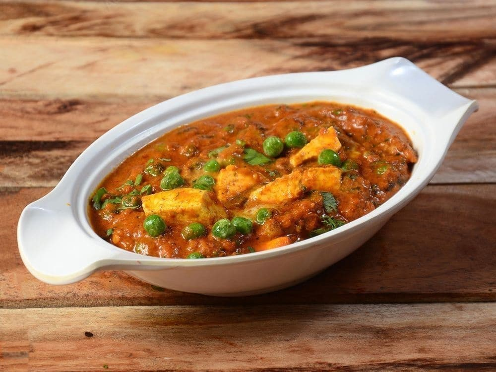

Cottage chesee and green peas

Description
Matar paneer recipe is a popular Indian Curry dish made with green peas and Paneer
(Indian cottage cheese) in a base of onions, tomatoes, cashews, spices and herbs.
The recipe hails from the versatile Northern Indian cuisine that has many different
(and delicious) variations.
Ingredients
- 300gm Paneer or Indian Cottage chesee
- 300gm Fresh or Frozen peas
- 200gm tomatoes
- 200gm onions
- Green Chilies according to taste
- 50gm Cashew
- cumin seeds 1/2tsp, turmeric powder 1tsp, red chili powder 1tsp
- garam masala powder 1/2tsp, salt according to taste
- ginger 25gm, garlic 25gm, coriander leaves 10gm
- black peppercorns 10-12, cardamom, cloves and cinnamon 5-6 piceas each.
Preparation
- First, you will take all of the follwing ingredients and add them to a
grinder or a blender :chopped onions, tomatoes, green Chilies Cashew,
ginger,garlic,coriander leaves, cloves, black peppercorns, cinnamon
- After that, you will grind the ingredients into a smooth paste. If needed add 2
to 3 tablespoons of water while grinding the masala paste. When the paste is creamy
and blended to a fine consistency, set aside until later.
- Next add 3 tablespoons oil in a 2-litre pressure cooker or a pot. Let the oil
become hot. Reduce heat to a medium-low heat. Add ½ teaspoon cumin seeds and
fry until they splutter.
- Next, add in your ground masala paste, and mix well.
- Now you will sauté the paste mixture for about 10 to 12 minutes on a medium-low heat.
- After sautéing the masala paste, add in all of the dry spice powders,stir to
combine well and sauté for a minute. Be sure to include: ¼ teaspoon turmeric
powder,½ teaspoon kashmiri red chili powder,½ teaspoon of red chilli powder
½ teaspoon garam masala powder (replace with ¼ teaspoon of curry powder)
- Next, add in 1 cup of rinsed green peas or matar. You can chose to add either
frozen or fresh green peas.
- Then, add 1 to 1.25 cups water, salt and mix thoroughly.
- It’s now time to pressure cook the green peas until they are fully cooked.
Be sure to cover the cooker tightly, then cook for about 9 to 10 minutes
or 2 to 3 whistles on medium to medium-high heat.
- Finally, add the paneer cubes and mix well or simmer on a low heat
for a few seconds or until the paneer cubes are fully cooked.
Don’t overcook as the paneer will become dense and hard.